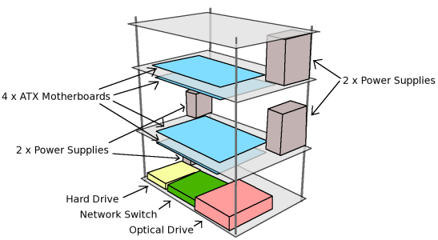
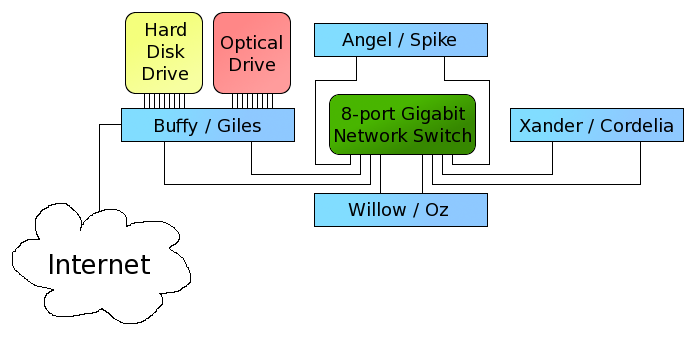

Slayer was designed to be taken to Milwaukee-area high schools as a tool to show students the parts of a computer and the neat programs a high-performance computer can run. Our design is similar to the Microwulf project. Since ours differs in a few ways this page will describe the basic notes for design.

We used standard ATX style motherboards to our final dimensions are 21" tall, 18" wide, and 13" deep. For our purposes we decided to leave the top-most motherboard facing up and open so students can easily see what the inside of a computer looks like and various components can be identified. We also chose to completely enclose the four nodes with acrylic glass to prevent curious hands (and a little bit of coolness in there as well). We took advantage of the enclosure by mounting the power supplies and cooling fans to the side walls to hold them in place during transit.
We mounted all the auxiliary hardware (network switch, hard disk drive, and optical drive) to the bottom most layer of acrylic glass with the head node facing these components. In the second tier there are two compute nodes connected via the network and in the third tier there is a single compute node connected via the network.
Each node has two gigabit network interfaces (one on-board and one PCI-express), this facilitates faster network communication for each core of the processor. Below is a diagram of how the cluster internally interacts.

Internally, each node has two hostnames and IP addresses. We have two subnets (one for each network card) numbered 192.168.50.x and 192.168.51.x with each node's address ending in the same digit.
As an operating system, we chose to use Fedora Linux (though we may change to Rocks Cluster in the future). On the head node, we have partitioned NFS shares for each of the compute nodes to run on, we use DHCP and TFTP to start the boot process and mount the drive.
Slayer (the public name of the head node), also has a connection to the Internet to allow updates and communication to occur.